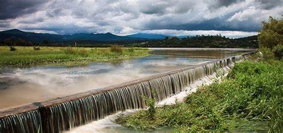

Presa San Antonio
La Presa San Antonio es un destino ideal para actividades recreativas como la pesca y paseos en bote. Ofrece un paisaje natural hermoso y tranquilo, perfecto para una escapada de la rutina diaria. Los visitantes pueden disfrutar de un ambiente sereno rodeado de la belleza natural de Huasca de Ocampo.
Para llegar a la Presa San Antonio, dirígete al oeste desde el centro de Huasca de Ocampo por la carretera principal. El trayecto en coche dura aproximadamente 10 minutos y está bien señalizado.